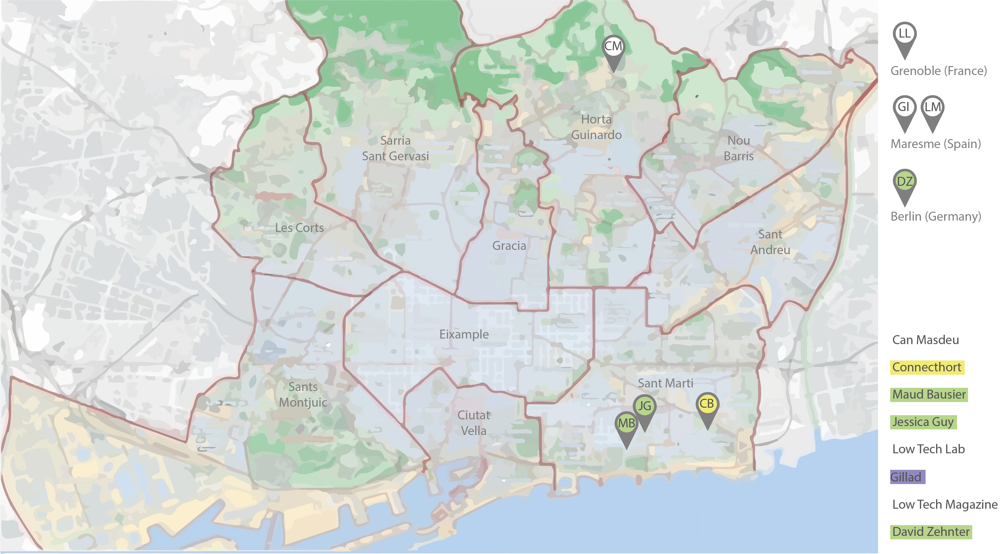
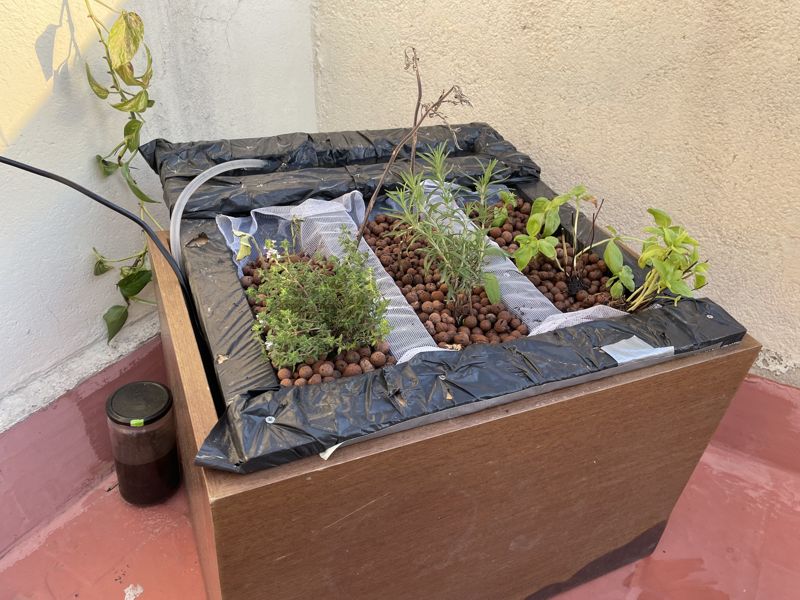
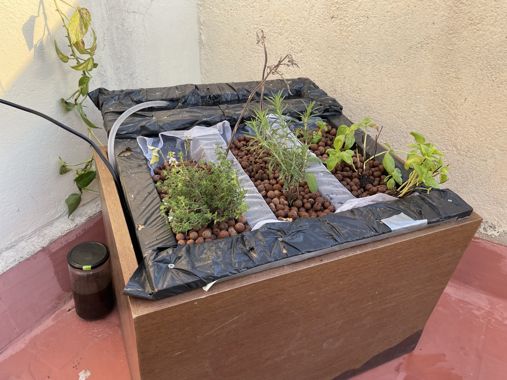
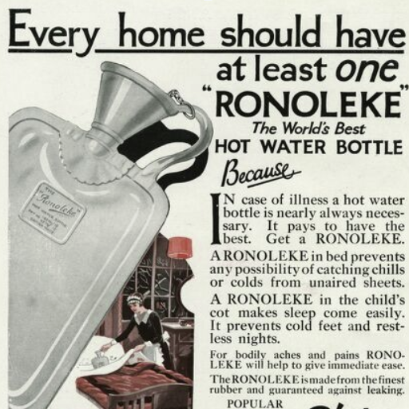

term 2
slow lab
slow lab vision/mission
A collective to bring more awareness and promote a resilient lifestyle. Besides that, we guide people to produce their own low tech´s at home, collect data, develop products and exchange ideas and thoughts with people in our community.
With Slow lab we are trying to appeal not only to the hippie bubble, which is already living sustainably, connected to nature and doing low-tech unconscious projects, but also to the high-tech, social media bubble and other groups of people who don't normally engage with issues like this. We want to make it attractive for everyone. People love spectacle, the seemingly impossible possible is what inspires people. To create a neo-hippie-movement.
Through social media and the emerging fake news, many people suffer from perception distortions and mental illnesses such as depression. But social media also brings people together in other ways, and raises awareness of socially critical issues. We try to use social media to reach out to diverse people and get a wider reach and the cohesion brings hopefully a higher understanding of climate. So Slow lab is making projects open source and assessable for everyone, while writing every single step down and observing the data.
You work more, have less free time and then buy things to reward yourself and create endorphins instead of doing directly what you feel like doing regardless of how much money you earn. Due to lack of time and stress you forget more and more what is happening around you and don't understand anymore. Slow lab should help to become more aware of nature and the need to pay attention to it, as well as to better understand events.
Also the slow lab should help to underscore the potential of past and often forgotten technologies when it comes to comes to designing a sustainable society. Interesting possibilities arise when you combine old technology with new knowledge and new materials, or when you apply old concepts and traditional knowledge to modern technology.
Slow lab Discord Slow lab Website Slow lab Instagram
community building
While creating a community Audrey and me contacted many different companies and institutions to get in contact, exchange ideas/thoughts, expand our knowledge and find some collaborators. We tried to find communities around Spain but caused to COVD there were not so many still going on.
who “Low tech lab (France)” was the first one we contacted, which seemed to have similar values and thoughts. At the Low-tech Lab, they use the term ‘low-tech’ to define the techniques, technologies, services and know-hows that stick to three main principles: Useful. Accessible. Sustainable.
status After analysing their website we contacted them via e-mail and after a short time we arranged a video-call. We talked to Yolene and Kevin, who are part of the “Low tech lab” about how to grow a community, exchange some ideas and thoughs and got many advices. About what you could create out of trash, which is actually a resource, what kind of workshops and events are possible, to show for example how to make your own energy and also who else is part of the low tech community. We figured out that the most of the tutorials creating products and how to build a community are in French, so we arranged to make a English discord channel, for all non-French speaking countries/people. Slow lab is part of their French and English discord channel and also they are connect through Instagram. Now other people joined it and started to write about different low tech projects.
who “1769 lab” is managed by David Zeitner, who is a Software – Engineer and we contacted after we knew he is a partner from the Low tech lab in France. They are a small team working to establish a lab for sustainable and resilience development related to off-grid living and small-scale farming. Currently he is working on a aquaponic system.
status After contacting the Low tech lab, Audrey and me contacted David and arranged a video-call and exchanged some ideas. He offered his place in Spain in the City called Calaceite to apply for a residency to do low-tech development. After the first video-call, we had another one and are also in contacted with him in the English-speaking discord channel from the Low tech lab. Together with him we are working on no-soil gardening solutions and co-design our hydro/aquaponic systems. Also he is working on using mealworm-shit for a fertilizer, which he sent to use to use it for the hydroponic system instead of using chemical one.
who “Green Gorillas” where the next one we contacted, which is a team of four people. After the research trip in Mallorca we visited them and met Vanessa, Dorus and Eva, who are also living in Mallorca. “Green Gorillas” run sustainable living and tiny house build workshops to help to live more sustainable and are also connected with the “Low tech lab” in France.
status After contacting them via e-mail, we arranged a meeting in person in Mallorca, where we spend some time at their lab. They showed us how they build tiny houses and compost toilets and how to heat water through a compost. We could talk with them a lot about our master projects, in which they were interested a lot and also exchange thoughts and other ideas to create less waste and reuse it. Also they make us aware of other communities like “Finka koskiro”, “Casita verde”, “Permamet”, “Phonix project” and the “Pressure plastic company”.
who “Connecthort” and “Bam Biobuilt”, where not the first one we were contacting about the Slow lab, but the first one we were speaking too, because of our weekly volunteering section there since October. Connecthort is urban gardening space, which is used for permaculture, but also other projects like nature house building with Bam Biobuilt out of bio bricks, sustainable workshops and events or university projects.
status Since we were volunteering at their place a long time, we have a good connection to the owners and different other people, who are connected to “Connecthort” and “Bam Biobuilt”. In the next weeks we want to arrange an event, exhibition or workshop their about low tech cooking, growing or gaining energy. Also we are allowed to experiment with some low tech projects like the solar oven.
who “Slow food Barcelona” we contacted also because they have a common ideology of the slow movement and also because its connected to food. It´s a is a non-profit, independent and non-political association, which is made up of a group of people with different skills and a close relationship with food: artisan producers, farmers, fishermen, forgers, agronomists, scientists, cooks, creators, educators, journalists, documentalists.
status Until now we haven´t received a message, but looking for to get in touch with them and exchange some thoughts. Also to maybe make an event related to food mixing low techs we are experimenting and the slow food “eco-gastronomy” approach.
who “Slow food Barcelona” we contacted also because they have a common ideology of the slow movement and also because its connected to food. It´s a is a non-profit, independent and non-political association, which is made up of a group of people with different skills and a close relationship with food: artisan producers, farmers, fishermen, forgers, agronomists, scientists, cooks, creators, educators, journalists, documentalists.
status Until now we haven´t received a message, but looking for to get in touch with them and exchange some thoughts. Also to maybe make an event related to food mixing low techs we are experimenting and the slow food “eco-gastronomy” approach.
who “Fad lab” in Barcelona we are in contact in our master. In the team are two woman called Jessica Guy and Maut Bousier, who also worked on low tech projects, like a compost, incubator, dehydrator, hydroponic and aero ponic systems.
status With their knowhow and experiences I could develop further my compost and also my hydroponic system and got helpful advices what to grow and how. Also we talked about which fertilizer could be used to avoid using chemical one. Maut has a whole website, where she is sharing open-source projects, with tutorials, photos, videos and her experiences.
who “Aurora del camp” we have contacted and arranged a meeting in the end of April. We contacted Gilad from Aurora del Camp. It’s an organic farm in Maresme, which is close to Barcelona. This farm produce organic vegetables and specialize in seasonal garden products, with more than thirty different crops grown throughout the year.
status We contacted them but until now haven´t seen them in person, but soon we will. With Aurora del Camp we would like to talk about rural projects and how it´s possible to implement old techniques to new technologies and make human powered farming easier, also maybe through machines. It would be nice to experiment low techs in a rural and agricultural context, discover existings ones and organize workshops.
who “Low tech magazine” was the last one until now Slow lab has contacted, where we spoke to the owner Kris de decker. The Low-tech Magazine underscores the potential of past and often forgotten technologies and how they can inform sustainable energy practices. They take high tech problems and create low tech solutions with a similar ideology like slow lab has: Bring old techniques together with new technologies.
status After contacting Kris via e-mail we had our first in person meeting on the 21st of April, where we discussed some common ideas and possibilities for future projects. We all have the same goal to make products in a low tech philosophy way, opensource, but also nice looking to attract all kind of people and not only the same bubble. Also we talked about future projects, when Kris is spreading with ideas and we could make nice looking designs for it, like redesigning his thermos electric thermometer for his fireless cooker/ fridge or for the human powered bicycle regenerator, which is giving the whole energy to their website. Also we talked about how to show people how to produce their own to be less dependent and make an event about it which could be port of the Mdefest. It could be an event to cook and make music with solar powered energy system and cool drinks with the thermos fridge.
It was not easy to find people with the same interests and then in Spain. A few communities we contacted did not get back to us or have not existed since the beginning of the Corona Pandemic. However, after some time we were able to get in touch with a few and are slowly forming contacts. Slowly we get to know more and more people who have similar values and thoughts and implement projects where we can also learn from each other.
compost
what A compost is a humus-rich rotting product from organic waste. The processes of humification and mineralization that take place during composting are similar to the formation of humus in the soil. Last term I built a compost out of basic materials to reuse the food waste I make and also to create good soil for my vegetable plants. An organic waste takes a long time until you can reuse it, that’s why I bought earthworms to help, which means Vermicompost. Vermicompost is the product of the decomposition process using species like earthworms, to create a mixture of decomposing vegetable or food waste, bedding materials, and vermicast. This process is called vermicomposting, while the rearing of worms for this purpose is called vermiculture.
why A longer time ago I started to plant vegetables and sometimes had issues like plant diseases, funghi, lack of nutrients and so one. Also I am separating trash, except from organic waste, because in Barcelona there is no possibility to recycle it, there is no bin for that. So I thought about creating a compost to reuse the food waste and create a nice mixture of nutrients, which I could reuse for my plants. But then I realised it took me to much time so I bought earthworms to start vermicomposting.
status I started to vermicompost on the 19.11.2022 and checked the mixture after 18 weeks. I recognised I have a big amount of nice soil for the compost and also could collect 500ml of nutrients liquid, which could be use as a fertilizer. But it’s not enough to use it for all my plants. Also I thought about to use the compost liquid as a fertilizer/nutrients for the plants for the hydroponicsystem, which is produced by itself. But unfortunately it is not enough and also takes a long time.

alternative way That’s why I researched more about compost to find out. I found a compost called bokashi compost, which works with efficient micro-organisms (EM). These are bacteria that break down matter without the help of vermicomposters. This is why the bokashi works hermetically because naturally, these bacteria are found very deep in the earth and works with very little oxygen. In the same logic, compost must be compacted with each refill. The bokashi compost creates a big amount of natural fertilizer/ compost liquid which I full of nutrients every day. This juice could be a natural fermenter for plants but It has to be diluted with 99% water. low tech bokashi compost
hydroponicsystem
what Hydroponic is Latin and means working water. It includes gardening without soil. Plants sustain themselves through the process called photosynthesis. Plants capture sunlight with chlorophyll (a green pigment in their leaves). They use the energy from the light to split water molecules that they have absorbed through their root system. The hydrogen molecules combine with carbon dioxide to form carbohydrates, which the plants feed on. In the process, oxygen is released into the atmosphere. Plants do not need soil to perform photosynthesis. They need the soil to supply them with water and nutrients. Nutrients dissolved in water can be delivered directly to the plant's root system through flooding, misting or submersion. Hydroponic innovations have proven that direct contact with nutrient-filled water can be a more effective and versatile growing method than traditional irrigation.
why Due to the multiple application of monocultures it comes more and more to the desertification of our soil. Monoculture causes that for a plant all specific nutrients are extracted from the soil and thus the earth dries up more and more until it almost becomes dust and does not need years until it regenerates again and can be used for agriculture. Due to the non-existent nutrients in the soil, more and more pesticides are used to quickly plant vegetables and fruits. Hydro, aero and aquaponic systems are new technologies that have evolved from old techniques. They can revolutionize agriculture and be a crucial factor in maintaining the habitability of our planet.
Not only do they help provide an alternative for sustainable monoculture, but hydroponic systems use up to 90% less water than traditional agriculture. Water scarcity is one of the biggest environmental problems of our time. Only a fraction of the water is drinkable or applicable for planting and so on. It is already scarce in many regions of the world, so that the environment and society are experiencing noticeable changes.
Besides that growing without soil and specific nutrients in the water is a more efficient. The yields are stronger, the growth is rapid, you can grow all over the year and at any place, it eliminates soil and soil-borne pests and diseases and has no soil erosion and air and water pollution.
how I made a low tech hydroponic system with things I have at home and fadlab while observing the videos of the “Low tech lab” in France and followed the tutorials to plant vegetables and herbs and collecting data. Besides that I planted vegetables in the soil in the traditional way and would like to compare the difference later.
For the system itself I used wood slats, a big and thick plastic bag, a wooden box which I found on the street, another plastic bag, a water pump and a water pipe. I screwed the wooden slats together with the big black plastic bag so there are deepening’s to fill in later the clay granules. I have added a few holes so that what can circulate. Then I assembly the pipe with the pump put it into the small plastic bag and guide the pipe along the upper system part. Then I added water and compost liquid into the blue plastic bag and fill the deepening’s with clay granules. After growing the seedlings with long roots I planted them into the clay granules and turned on the water pump. For the plants I used seedlings of rosmary, tomato, basil and oregano.
Besides planting seedlings in the hydroponic system I started planting some in the soil based pots to the difference. And I could already observe that I need to use much less water. For the hydroponic system its always the same one, I just need to add some after a while. The soil planting pots need extra water twice a day. But for the installation it was much easier just to plant the plants into the pots. In the hydroponic system they are falling on the sight, because they don´t have the all-around physical support anymore. Also it took some time to set the system so its working fluently without spilling water on the sight, but now it’s well calibrated.
 

nutrients
Each plant need various nutrients also they have different kind of deficiency symptoms. Normally plants get it directly from the soil in the nature, which should include all natural nutrients, but because of the use of the big amount of pesticides the soil is dying and looses these important nutrients. Also because the hydroponic system doesn’t consist soil, the nutrients need to be added extra. Hydroponicsystem are really good to save water and space and are very useful when you don’t have a garden and want to grow your own vegetables. So its important to add the right amount and the specific nutrients for the hydroponic plants.
There are different ways to get nutrients, if you have bokashi compost or any other compost which creates a big amount of liquid its possible to use that and mix it with water or you buy chemical one which include all the relevant macro and micro nutrients.
There are different kind of types of nutrients solutions the hoagland solution, the working solution and the steiner solution. Like we humans also plants need micro and makro nutrients. The macro nutrients include proteins and bring energy and micro nutrients include specific ingredients. Nutrients info Nutrients info 2 Hydroponic Nutrients
solaroven
what text
why text
energy consumption text

how text
experiments text
preserving food
dry challenge tries
ferment tomatoes and onions
other projects
heating wearables “Heat people, not places” We want to bring the old hot water bottles to our daily context (and not just when we are sick or to relieve pain) to bring thermal comfort without heating entire rooms reduces energy consumption. We made small backpacks at the size of our hot water bottles so we can carry our own heater. We could imagine more wearables with dedicated pockets for multiple hot water containers.
fireless cooker In today‘s context of climate emergency and natural resources scarcity we want to find alternatives to reduce the non renewable energy uses in our daily lives. The process of cooking on a stove being super inefficient in terms of energy consumption we wanted to find alternatives that we can apply easily in our homes. After letting the pot on a stove until it boils, place it into an isolated containers (any box with blankets for example). The heat is trapped and it continues to cook without using more energy.
evaporative cooler Persian pyramids, spanish botijos, zeer pots… they are all using the technique of evaporation to cool their content. To reduce the energy used in our kitchens, we want to try this “pot in pot” cooling technique and see how it could be integrated in daily routines. Place a terracotta pot inside a bigger one, fill the space in between both with sand and water it. The inner pot cools as the water evaporates.
Term 2